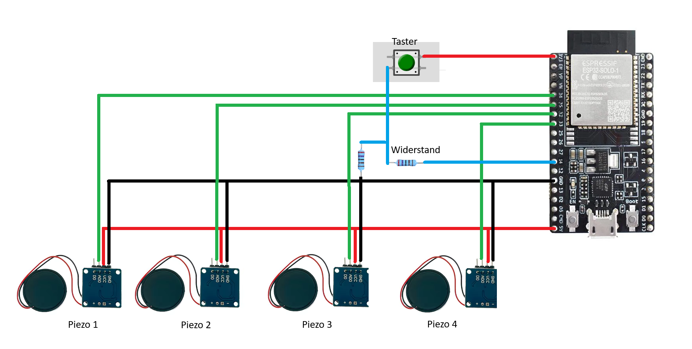

ESP32 Web Installer
Installiere die Schlagzeug-Firmware blitzschnell direkt über deinen Browser auf deinem ESP32. Verbinde das Board per USB-Kabel mit dem PC und starte den Vorgang.
Hinweis: Funktioniert nur in Web Serial fähigen Browsern wie Google Chrome, Microsoft Edge oder Opera.
Bauanleitung & Hardware-Dokumentation
Mit dieser Anleitung kannst du dir dein eigenes DIY-Schlagzeug aufbauen. Die Sensoren erfassen Schläge über Piezo-Elemente, die Signale werden vom ESP32 ausgewertet und per USB-Verbindung an den PC übertragen.
Benötigte Materialien
ESP32-Development Board
Das Gehirn des Schlagzeugs. Liest die analogen Sensorsignale ein und filtert Rauschen heraus.
Piezo-Sensormodule (4x)
Wandeln Vibrationen in elektrische Spannung um. Sie sollten über einen analogen Ausgang (AO) verfügen.
Taster (Push Button)
Dient zum Starten/Aktivieren des Messcodes oder Kalibrierung.
10 kΩ Widerstand
Schützt den ESP32 und dient als Pull-Down-Widerstand für den Taster gegen Signalrauschen.
Schaltpläne & Platinen-Layout
Hier findest du die genauen Verdrahtungspläne und die Layouts für die Entwicklung einer maßgeschneiderten Platine.
1. Steckplatinen-Verdrahtungsplan
Diese Zeichnung zeigt die praktische Verkabelung auf einem Breadboard. Hier siehst du, wie die analogen Datenpins der 4 Piezo-Sensormodule an die analogen Eingänge des ESP32 angeschlossen sind:
- Kick/Bass: GPIO 35 (Analog)
- Hi-Hat: GPIO 34 (Analog)
- Snare: GPIO 32 (Analog)
- Tom: GPIO 33 (Analog)

2. Detaillierter Elektronik-Schaltplan
Ein detaillierter, technischer Schaltplan. Er verdeutlicht die Spannungsversorgung (5V VCC an die Piezos, 3.3V an den Taster) und zeigt präzise, wie der Taster an GPIO 14 angebunden ist. Die Ground-Leitungen (GND) aller Module fließen hier auf einen gemeinsamen Massepunkt am ESP32 zusammen.
3. Platinen-Schaltplan (PCB Schematic)
Dieser Schaltplan dient als direkte Vorlage für den Entwurf einer gedruckten Leiterplatte (PCB). Er definiert die exakten elektrischen Netze, Steckerleisten (Header) für den ESP32 und Schraubklemmen für die Piezos, inklusive notwendiger Glättungskondensatoren zur Stabilisierung der Versorgungsspannung.

4. Leiterplatten-Layout (PCB Trace Layout)
Das physische Kupfer-Layout der Platine. Es zeigt die Leiterbahnen, Lötpads und Kupferebenen. Dieses kompakte Layout kann als "Shield" oder "Hat" direkt auf den ESP32 aufgesteckt werden. Die breiten Leiterbahnen minimieren Signalverluste und Störgeräusche bei der analogen Messung der Trommelschläge.
Schritt-für-Schritt Aufbauanleitung
- Schritt 1: Stromversorgung vorbereiten Verbinde den 5V-Pin (VIN/5V) des ESP32 mit der VCC-Leitung deiner Sensormodule. Verbinde die GND-Pins aller Komponenten mit dem GND-Pin des ESP32, um ein einheitliches Bezugspotenzial herzustellen.
-
Schritt 2: Piezosensoren verkabeln
Schließe die 4 Piezomodule an. Der Analogausgang (AO/OUT) jedes Moduls führt zu folgenden Pins des ESP32:
- Bass Drum (Kick) -> GPIO 35
- Hi-Hat -> GPIO 34
- Snare -> GPIO 32
- Tom -> GPIO 33
- Schritt 3: Taster mit Pull-Down-Widerstand verkabeln Verbinde eine Seite des Tasters mit der 3.3V-Spannung des ESP32. Verbinde die andere Seite des Tasters mit dem Pin GPIO 14 des ESP32. Schließe an diesen Pin 14 zusätzlich den 10kOhm-Widerstand an und verbinde dessen anderes Ende mit GND (Pull-Down-Schaltung).
- Schritt 4: Firmware flashen & Kalibrieren Verbinde den ESP32 mit deinem PC, klicke oben auf den "Install" Button, um die Software aufzuspielen. Die Platine liest nun im 10ms-Intervall die analogen Spannungsspitzen aus.
Sicherheitshinweis zur Tasterschaltung (Pull-Down)
Ohne den Pull-Down-Widerstand kann es zu Geister-Triggern kommen, da der digitale Pin 14 bei unbetätigtem Knopf in der Luft schwebt ("floating input") und elektromagnetische Störungen als Knopfdruck fehlinterpretiert.
- Der Widerstand: Zieht den Pegel an Pin 14 dauerhaft auf 0V (Low), solange der Taster offen ist.
- Der Tastendruck: Schließt den Stromkreis zu 3.3V, überwindet den Widerstand und zieht den Pegel sicher auf 3.3V (High).
ESP32 Quellcodes (MicroPython)
Wenn du den Code manuell anpassen oder über Tools wie Thonny/VS Code hochladen möchtest, kannst du die Quellcodedateien hier kopieren. Alternativ stehen sie im Download-Tab als Datei bereit.
# importieren der Bibliotheken
from machine import ADC, Pin
import time
import sys
import select
# Pin-Belegung
# Pins Sensoren
Bass = ADC(35)
HiHat = ADC(34)
Snare = ADC(32)
Tom = ADC(33)
# einstellen des Messbereichs
Bass.atten(ADC.ATTN_11DB)
HiHat.atten(ADC.ATTN_11DB)
Snare.atten(ADC.ATTN_11DB)
Tom.atten(ADC.ATTN_11DB)
Bass.width(ADC.WIDTH_12BIT)
HiHat.width(ADC.WIDTH_12BIT)
Snare.width(ADC.WIDTH_12BIT)
Tom.width(ADC.WIDTH_12BIT)
usb_abfrage = select.poll()
usb_abfrage.register(sys.stdin, select.POLLIN)
# Variablen
threshold = 5
schlag = 0
start_zeit = time.ticks_ms()
zeit = 0
Snare2 = 0
Bass2 = 0
HiHat2 = 0
Tom2 = 0
# Neue Variablen für optimiertes Zeit-Fenster und Entprellung
hit_fenster_start = 0
hit_aktiv = False
sperr_zeit = 0
print("Piezo-Ueberwachung gestartet...")
# Hauptschleife
while True:
# Auslesen der Sensoren
Bass1 = Bass.read()
HiHat1 = HiHat.read()
Snare1 = Snare.read()
Tom1 = Tom.read()
aktueller_tick = time.ticks_ms()
# Zeit Berechnung
zeit = time.ticks_diff(aktueller_tick, start_zeit)
zeit = zeit / 1000
# Piezo Abfrage (nur wenn nicht durch Debounce gesperrt)
if (Bass1 > threshold or HiHat1 > threshold or Snare1 > threshold or Tom1 > threshold) and time.ticks_diff(aktueller_tick, sperr_zeit) >= 0:
if not hit_aktiv:
hit_aktiv = True
hit_fenster_start = aktueller_tick
# Trommeln in diesem winzigen 10ms-Fenster aufsammeln
if Bass1 > threshold: Bass2 = 1
if HiHat1 > threshold: HiHat2 = 1
if Snare1 > threshold: Snare2 = 1
if Tom1 > threshold: Tom2 = 1
# Wenn Hit-Fenster aktiv ist und 10ms vergangen sind -> Senden
if hit_aktiv and time.ticks_diff(aktueller_tick, hit_fenster_start) > 10:
sound_parts = []
if Snare2 == 1: sound_parts.append("snare")
if Bass2 == 1: sound_parts.append("bass")
if HiHat2 == 1: sound_parts.append("hihat")
if Tom2 == 1: sound_parts.append("Tom1")
sound = ", ".join(sound_parts)
# Zurücksetzen der Trigger
Snare2 = 0
Bass2 = 0
HiHat2 = 0
Tom2 = 0
if sound != "":
csv_zeile = f"{schlag};{Bass1};{HiHat1};{Snare1};{Tom1};{zeit};{sound}\n"
schlag = schlag + 1
sys.stdout.write(csv_zeile)
hit_aktiv = False
sperr_zeit = time.ticks_add(aktueller_tick, 60)